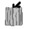

{{ platoon.name }}
{{ letter }}
Delete Platoon
{{ continent.name }}
{{ warpgate.name }}
{{ resolution.name }}
{{ resolution.name }}
Auto
VS
TR
NC
Exit
Save
{{ getText() }}
Send squad back to warpgate

Delete Squad
{{mouseScreenPos}}
{{mouseMapPos}}
{{cameraPos}}
{{zoomFactor}}
{{drag}}
 Send squad back to warpgate
Send squad back to warpgate
Send squad back to warpgate
Send squad back to warpgate